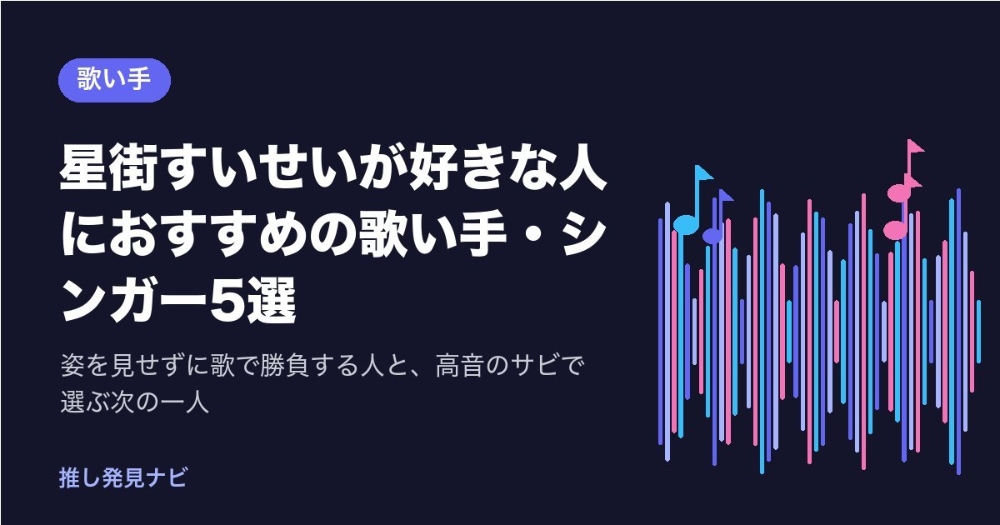

星街すいせいが好きな人におすすめの歌い手・シンガー5選｜姿を見せずに歌で勝負する人と、高音のサビで選ぶ次の一人
※この記事はプロモーション（広告）を含みます

星街すいせいの「Stellar Stellar」や「ビビデバ」で、張りのある高音のサビを思わず一緒に歌ってしまった経験はありませんか。
この記事を読むと、星街すいせいの好きなところを4つに分けて、次に聴きたい歌い手・シンガーを5人の中から選べます。
2018年に個人勢のバーチャルシンガーとして出発し、ホロライブ所属を経て、2025年2月に日本武道館、2026年は個人事務所を立てて初のアリーナツアーへ進んだ星街すいせいの歩みを短くたどってから、5人を共通点と違いで紹介します。
星街すいせいの魅力をおさらい
星街すいせい（ほしまち すいせい）は、2018年3月22日に個人勢のVTuberとして活動を始めました。初期の曲「comet」ののち、2019年5月にホロライブの音楽レーベルINNK Musicに所属し、同年12月にホロライブ本体へ移籍しています。2021年の1stアルバム『Still Still Stellar』に入った「Stellar Stellar」がヒットし、2022年にはTAKU INOUEとのユニットMidnight Grand Orchestraも始動しました。
2023年の2ndアルバム『Specter』の年には、VTuberとして初めてTHE FIRST TAKEに出演。2024年には「ビビデバ」がTikTokを中心に大きく広がり、MVは1億再生を超えました。2025年1月22日に3rdアルバム『新星目録』を出し、2月1日には日本武道館でのソロライブ「SuperNova」を達成しています。
2026年3月22日、8周年の配信で個人事務所「Studio STELLAR」の設立を発表し（ホロライブ所属は継続）、翌23日に新体制初のシングル「プリマドンナ」を配信。8月にはROCK IN JAPAN FESTIVALに出演し、9月8日から11月12日にかけて、Kアリーナ横浜・GLION ARENA KOBE・IGアリーナ・マリンメッセ福岡をめぐる初のアリーナツアー「Once Upon a Stellar」を開催中です。2027年2月11日には幕張メッセでMidnight Grand Orchestraの公演も予告されています。次の目標として東京ドームを公言しているのも、すいせいらしいところです。
作詞作曲はTAKU INOUE、ツミキ、キタニタツヤといった外部の作り手が中心で、本人は選曲・ディレクション・歌唱に専念する「プロデュース型」。題材は「星・彗星・宇宙」を自分の名前と重ねた自己言及が核で、「夢を叶える途中の自分」をそのまま物語にします。低音から高音まで張りのある声と、カラオケで「歌いたくなる」サビの高音が武器です。
読者の方からよく聞く声は、こんな形です。「『ビビデバ』から入って、『新星目録』まで聴いた。次は誰を聴けばいいのか分からない」。この記事は、その「次」のための地図です。
星街すいせいの好きなところを分けると、「姿を見せずに歌で勝負する」「ネット発で大きな会場へ」「提供曲を自分の物語にする力」「歌いたくなる高音のサビ」の4つになります。どれに惹かれたかで、おすすめが変わります。
姿を見せずに歌で勝負する同時代の歌い手へ
Ado
2002年生まれ、東京都出身の歌い手です。2017年1月にニコニコ動画へ歌ってみたを投稿して活動を始め、2020年10月23日に「うっせぇわ」（syudou提供）でメジャーデビューしました。2022年の映画『ONE PIECE FILM RED』では歌姫ウタの歌唱キャストを務め、「新時代」は累積再生6億回を超えています。2024年に国立競技場、2025年には5大陸34公演の世界ツアー「Hibana」、2026年7月4日と5日には日産スタジアムで2日間14万人を集めました。2026年2月には初めて自分で作詞作曲した「ビバリウム」を配信し、10月24日の誕生日にはファンクラブ限定ライブで新曲「患者A」を初披露しています。2027年1月からは歌い手活動10周年を記念した「Adoの歌ってみたツアー2027」も発表済みです。
星街すいせいとの共通点は、姿を見せずに歌で勝負していることと、提供曲型で、同じ年代にTHE FIRST TAKEに出たことです。違いは「見せない」の形です。Adoは顔を出さない実在の歌い手で、ビジュアルはイラスト、ライブはシルエットで歌います。すいせいはアバターを持つバーチャルシンガーです。Adoが低音から高音まで振り幅の大きい太い声で叫びと表現力を押し出すのに対し、すいせいは張りのある高音のサビで「歌いたくなる」方向へ向かいます。すいせいの武道館の先に、国立競技場や日産スタジアムを声だけで埋めた同時代の姿を見ると、「姿を見せない歌手」という選択の広がりを感じられます。「うっせぇわ」「新時代」「ビバリウム」から聴いてみてください。詳しくはAdoが好きな人におすすめのアーティスト5選もあわせてどうぞ。
ネット発で海外にも届く、高速ボーカルが好きな人へ
Reol
長野県松本市出身、1993年生まれのシンガーソングライターです。2012年ごろにニコニコ動画の歌い手「れをる」として出発し、2015年にギガ・お菊とのユニットREOLを結成、2016年のアルバム『Σ』の「ギミー！」「宇宙の季節」で注目を集めました。2017年にユニットを終え、2018年からソロReolとして再始動。2020年の「第六感」がヒットし、2023年に3rdアルバム『BLACK BOX』、2025年11月9日には横浜アリーナで単独公演を行いました。2026年は1月21日に4thアルバム『美辞学』（LiSAとの「DEAD CENTER」収録）を出し、3月から7月の全国ツアーをLINE CUBE SHIBUYAで終え、11月と12月にはファンクラブ限定ツアー「極秘 LEGIT #2」を予定しています。
星街すいせいとの共通点は、ネット投稿から出発して大きな会場へ進んだ道筋と、英語のフレーズを交えた言葉で、速い譜割りを生声で歌い切る力です。すいせいの「GHOST」のような英題＋和詞の型が好きな人には、漢語や古語風の語彙に英語とスラングを混ぜて韻を踏むReolの言葉づかいが新鮮に響くはずです。違いは温度です。すいせいが「夢を叶える途中の自分」を前向きに物語るなら、Reolは「自分を縛る世界への反抗」「美と毒」を、エレクトロの冷たい音と挑発的な断言で描きます。低音の太さと高音の鋭さを両立する声は、すいせいの高音のサビとは別の「歌いたくなる」を持っています。「ギミー！」「第六感」「DEAD CENTER」から聴いてみてください。
すいせいに曲を書いた作り手を、本人の声で聴きたい人へ
キタニタツヤ
1996年生まれ、東京都出身のシンガーソングライター・ベーシストです。2014年にボカロP「こんにちは谷田さん」としてニコニコ動画に投稿を始め、2017年から2018年にかけて自分の歌唱に移行、ヨルシカのサポートベーシストも務めました。2019年の「悪魔の踊り方」「聖者の行進」などを経て、2023年に『呪術廻戦』懐玉・玉折編のオープニング「青のすみか」で大きくブレイクし、同年のNHK紅白歌合戦に初出場。2026年は3月11日に『地獄楽』第2期オープニングの「かすかなはな」（BABYMETAL客演）を配信し、11月4日にアルバム『DEKAI』『PURE』を2枚同時に発表、12月5日からは自身最大のアリーナツアーに出ます。
星街すいせいとのつながりは、曲そのものです。すいせいの楽曲には、TAKU INOUE、ツミキと並んでキタニタツヤが作り手として名を連ねています。提供曲型のすいせいの声で聴いた「作り手の言葉」を、本人の歌で聴き比べると、同じ作り手の別の表情が見えてきます。違いは視点です。すいせいが一人称の「歌う主体」として夢を語るのに対し、キタニタツヤは語り手が「悪役」や「傍観者」を演じ、否定語から入って肯定で終わる逆説の構造を好みます。ベーシスト出身らしく低音が主役のオルタナ・ロックで、ファルセットと地声を切り替える歌い方は、すいせいの高音のサビとは別の「落差」の気持ちよさがあります。「青のすみか」「悪魔の踊り方」「かすかなはな」から聴いてみてください。
提供曲と自作曲、二つの顔を持つ声が好きな人へ
幾田りら
2000年生まれ、東京都出身のシンガーソングライターで、YOASOBIのボーカルikuraとしても知られています。中学・高校時代から弾き語りを始め、2017年から2019年にはシンガーソングライター集団「ぷらそにか」に参加。2019年11月にAyaseとYOASOBIを結成し、「夜に駆ける」で2020年に社会現象となりました。ソロでは2023年に1stアルバム『Sketch』、2025年12月10日に2ndアルバム『Laugh』を配信し、2026年1月14日にCDを発売。4月4日のシングル「stay with me」を経て、5月5日から24日には神戸ワールド記念ホール、ぴあアリーナMM、ソウルのOlympic Hallをめぐる3年ぶりのソロツアーを行いました。8月からはYOASOBIの北米ツアーに出ています。
星街すいせいとの共通点は、「作り手の曲を精度高く歌い切る顔」と「自分の物語を歌う顔」を両方持っていることです。YOASOBIではAyaseの高速・高音・転調だらけの曲を息継ぎを感じさせずに歌い、ソロでは自作のアコースティックな曲を肩の力を抜いた声で歌います。すいせいが外部の作り手の曲を「自分の夢の物語」に変えて歌うのを聴いてきた人なら、幾田りらの二つの顔の切り替えに、同じ種類の面白さを見つけられるはずです。違いは題材と声の置き方です。すいせいが「星・ステージ・光」と具体的な会場名まで歌詞世界に持ち込むのに対し、幾田りらのソロは日常の小さな喜びや季節の変わり目を、ひらがなの多い平易な言葉で歌います。「Sparkle」「レンズ」「stay with me」から聴いてみてください。詳しくはYOASOBIが好きな人におすすめのアーティスト5選もあわせてどうぞ。
仮面と低音、「顔の二面性」が好きな人へ
超学生
2001年生まれの男性歌い手です。2012年12月、小学生のときにニコニコ動画へ歌ってみたを投稿して活動を始め、2015年7月からはYouTubeにも投稿。声変わりで約1オクターブ下がったことをきっかけに、低音を生かす方向へ転じ、「超絶ガナリヴォイス」と呼ばれる力強い低音が持ち味になりました。2022年10月28日に『仮面ライダーBLACK SUN』主題歌「Did you see the sunrise?」でポニーキャニオンからメジャーデビューし、2023年2月の1stアルバム『超』、同年3月の初ワンマン「入学説明会」（日本青年館ホール）を経て、2025年10月29日に2ndアルバム『アンフィテアトルム』を発売。2026年は3月の東名阪ツアー「Reverb」のファイナルで次の目標に日本武道館を掲げ、10月5日放送開始のTVアニメ『ロメリア戦記』オープニング「暁に鳴る」を担当しています。
星街すいせいとの共通点は、ネット発の歌い手で、ボカロPからの提供曲を軸にしていること、そして「目標を公言してファンと共有する」姿勢です。すいせいが武道館から東京ドームへと会場の名前を歌詞と活動の両方に置くように、超学生もメジャーデビュー、登録者100万人、日本武道館と、次の目標を口にしてきました。違いは声の高さと「見せ方」です。すいせいがアバターで、張りのある高音で聴かせるなら、超学生はベネチアンマスクという仮面で、がなりを効かせた低音で聴かせます。ラジオ「超学生の仮面を脱ぐ夜」や、ツアー「Reverb」でのクリスタルガラス製の仮面など、「顔の二面性」を表現に使うところは、姿の見せ方そのものを表現にしてきたすいせいのファンに響くはずです。「Did you see the sunrise?」「ルームNo.4」「阿弥陀籤」から聴いてみてください。
5人を「星街すいせいの好きなところ」で選ぶ
| 星街すいせいの好きなところ | おすすめ | 入口の曲 |
|---|---|---|
| 姿を見せずに歌で勝負する同時代 | Ado | うっせぇわ／新時代 |
| ネット発で海外へ、英語を交えた高速ボーカル | Reol | ギミー！／第六感 |
| すいせいに曲を書いた作り手の声 | キタニタツヤ | 青のすみか／かすかなはな |
| 提供曲と自作曲の二つの顔 | 幾田りら | Sparkle／stay with me |
| 仮面と低音、目標を公言する姿勢 | 超学生 | Did you see the sunrise?／阿弥陀籤 |
5人全員を聴く必要はありません。あなたがすいせいのどこに惹かれたかで、1人だけ選んで、入口の曲を1曲聴いてみてください。合わなければ次の1人へ。それが、無理のない「推しの広げ方」です。歌い手文化そのものから知りたい人は、歌い手文化の入門から入ると、5人の立ち位置が見えやすくなります。
まとめ
- 星街すいせいの魅力は、姿を見せずに歌で勝負する・ネット発で大きな会場へ・提供曲を自分の物語にする・歌いたくなる高音のサビの4つ
- Adoは同時代に「姿を見せない」を別の形で貫き、国立競技場と日産スタジアムを埋めた歌い手
- Reolはニコニコ動画の歌い手から海外へ届いた、エレクトロと高速ボーカルの先輩格
- キタニタツヤは、すいせいに曲を書いた作り手。本人の低音と逆説の言葉で聴き比べる楽しみ
- 幾田りらは、YOASOBIの精度とソロの自然体という二つの顔を持つ声
- 超学生は、仮面と低音で「顔の二面性」を表現にし、目標を公言して進む歌い手
星街すいせいと、曲を届けてくれる作り手の皆さん、そして5人のアーティストの歩みに、心から感謝します。
まずは表の中から1人、入口の曲を1曲だけ聴いてみませんか。この1曲だけで、次の推しの地図は十分です。
あなたが星街すいせいのいちばん好きなところは、4つのうちどれでしたか？
楽曲は各アーティストの公式チャンネルや配信サービスでお楽しみください。
最後まで読んでくださり、ありがとうございました。
気になった1曲を、今日1回だけ聴いてみませんか。各アーティストの公式チャンネルや配信サービスで聴けます。
あなたの好きなアーティストは誰ですか？
この記事は下書きにAIを使い、内容は運営者が公式情報で確認しています。